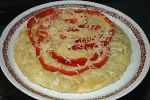
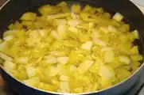

Tortilla española
| Tortilla española | |
|---|---|
 | |
| Zutatenmenge für: | 4 Personen |
| Zeitbedarf: | 45 Minuten |
| Hinweise: | |
| Schwierigkeitsgrad: | |
Die original Tortilla española – auch Tortilla con patatas, (Kartoffel-Tortilla) - ist ein in einer Pfanne mit Olivenöl gebratenes, kreisförmiges Omelette. Die spanische Tortilla ist nicht zu verwechseln mit den Tortillas de harina de maíz, den (fast) gleichnamigen mexikanischen Brotfladen. Die Tortilla española ist sicher einigen Spanienreisenden bekannt. Dass das berühmte Kartoffelomelette aber auch in Deutschland gut schmeckt, kann nun jeder für sich selbst herausfinden.
Zutaten
- etwa 700 g Kartoffeln
- 6–8 Eier
- Salz
- Viel Olivenöl
- sowie evtl. Zwiebeln
Kochgeschirr
- Ein flacher Teller, der größer ist als die Pfanne, in der die Tortilla zubereitet wird oder ein spanischer Tortilladeckel.
- Eine große Pfanne
- Ein Schneebesen
Zubereitung
- Die Kartoffeln (und eventuell die Zwiebeln) in Würfel oder Scheiben schneiden, salzen und dann im tiefen Öl garen, aber nicht anbraten.
- Bitte nicht am Öl sparen, die Kartoffeln müssen vollständig bedeckt sein. Alternativ empfehlen kalorienbewusste spanische Kolleg/innen das vorherige Garen der Kartoffeln in der Mikrowelle oder eben klassisch in Wasser (Pellkartoffeln).
- Wenn die Kartoffeln weich sind, das Öl abgießen.
- Das Öl kann später wiederverwendet werden.
- Die Eier verquirlen, salzen und die Kartoffeln hinzugeben.
- Wichtig ist hierbei, dass die Eier nur als Bindemittel für die Kartoffeln dienen, die Kartoffeln also bitte nicht in der Eimasse "ertränken".
- Die Ei-Kartoffel-Masse in eine Pfanne geben und bei niedriger Hitze durchstocken lassen.
- Tortilla wenden:
- Wenn die Masse auch oben anfängt zu stocken, kann man die Tortilla wenden, indem man den Teller verkehrt herum auf die Pfanne legt und schwungvoll (also schnell, ohne zu zögern!) herumdreht (in Spanien hat man für diese Aufgabe ein spezielles Instrument, "vuelvetortillas" genannt).
- Den Teller dabei evtl. mit einem Küchentuch isolieren.
- Eine andere Möglichkeit des "Wendens" besteht darin, die Tortilla aus der Pfanne auf den Teller gleiten zu lassen und danach die Pfanne umgekehrt auf den Teller zu decken.
- Nun dreht man die Tortilla samt Teller und Pfanne.
- Auf diese Weise geht keine rohe Eimasse verloren und die Tortilla bleibt ganz.
- Danach die Tortilla in die Pfanne zurückgleiten lassen.
- Den Wendevorgang beim Garen häufiger wiederholen und darauf achten, dass die Tortilla nicht in der Pfanne klebt und nicht zu dunkel wird.
- Die Tortilla wird in Stücke geschnitten wie ein Kuchen.
-

Die Kartoffeln in Würfel oder Scheiben schneiden und im tiefen Öl garen. -
Die Eier verquirlen, salzen …
-
… und die garen Kartoffeln (ohne das Öl) hinzugeben.
-
Die Ei-Kartoffel-Masse in eine beschichtete Pfanne geben und bei niedriger Hitze durchstocken lassen.
-
Die Tortilla wenden indem man den Teller verkehrt herum auf die Pfanne legt …
-
… und am besten über einem Waschbecken schwungvoll herumdreht.
-
Danach die Tortilla in die Pfanne zurückgleiten lassen.
-
Den Wendevorgang beim Garen häufiger wiederholen.
-
Anschließend die Tortilla mit Paprika, Käse …
-
… oder mit z.B. Chorizo ganz nach Belieben belegen.
Beilagen
- Brot mit Serrano-Schinken
Varianten
- Nachdem die Tortilla fertig ist, kann man sie aufschneiden und mit Käse, Paprika, Kochschinken oder sonstigen Leckereien füllen. In die Kartoffel-Ei-Masse kann man nach Belieben auch noch sehr klein geschnittene Zwiebeln hinzugeben.
- Tortilla española mit Avocado
- in der katalanischen Version wird reichlich Knoblauch hinzugefügt
Bekannte Variationen sind:
- Tortilla de atún (Thunfisch-Tortilla): Mit Thunfisch gefüllt
- Tortilla de bacalao (Kabeljau-Tortilla): Mit Kabeljau gefüllt
- Tortilla de champiñón (Champignon-Tortilla): Mit Champignons gefüllt
- Tortilla de espárragos (Spargel-Tortilla): Mit (bevorzugt) grünem Spargel gefüllt
- Tortilla de caracoles : Mit Schnecken gefüllt.
- Tortilla de angulas : Eine edle Variation mit jungen Glasaalen.
- Tortilla de espinacas : Mit gedünstetem Spinat.
- Tortilla de mariscos : Mit Meeresfrüchten.
| Dieses Rezept wurde in die Liste exzellenter Rezepte aufgenommen. |
| Dieses Rezept war das Rezept des Monats im Novemer 2005. |